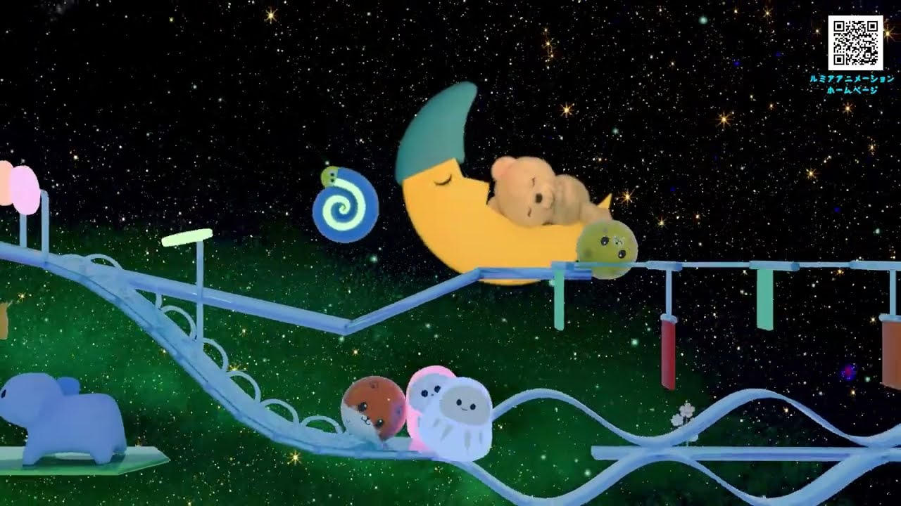
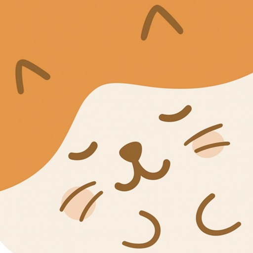
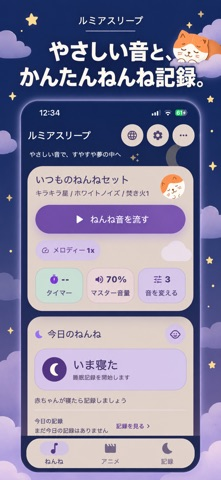
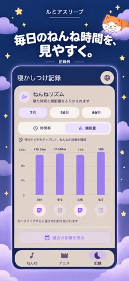
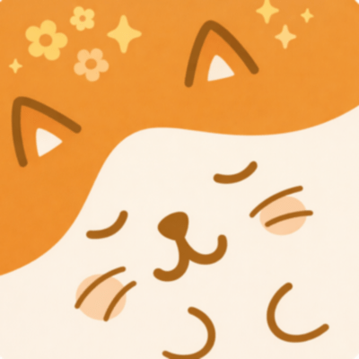

サイトの利用状況を計測してよいですか？
許可すると、閲覧・流入元・動画／アプリ／音楽のリンク選択をGoogle Analyticsへ送信します。Cookieと端末・ブラウザー情報を使い、サイト改善に役立てます。
許可しない場合も、すべての作品やリンクを利用できます。計測について詳しく見る
選ぶまではGoogleタグを読み込みません。選択はあとから変更できます。01 / ANIMATION
ルミアの世界を、
のぞいてみよう。
手づくりのような、ぬくもりのある世界。
気になる作品から、ゆっくりどうぞ。
ころころ進む、小さな仲間たち。
まあるい仲間たちと、オルゴールの音。
YouTubeで見る （新しいタブ）
きらきら星と、夜の小さな世界。
星空をめぐる仲間たちと、やさしいメロディー。
YouTubeで見る （新しいタブ）02 / APP FOR PARENTS

保護者のためのアプリルミアスリープいつもの音も、
ねんねの記録も。
好きな音を組み合わせたり、
寝た・起きた時間を残したり。
ご家庭のペースで、必要な機能を。
- 音をミックスして、セットを保存
- タイマーで再生時間を設定
- 寝た・起きたを記録、あとから編集
- 声や子守歌を録音
無料で利用できます（広告あり・アプリ内課金あり）。
プレミアム：月額200円。広告非表示、30日・90日のグラフなど。
最新の料金・対応端末・機能はApp Storeでご確認ください。



03 / MUSIC
音楽だけで、
楽しむルミア。
オルゴールのメロディーや環境音を、
いつもの音楽サービスで。
お好みの配信先を選べます。
Apple Music · Spotify ほか
音楽の配信先を選ぶ （新しいタブ）ころころ、きらきら。
小さな世界を、親子の時間に。